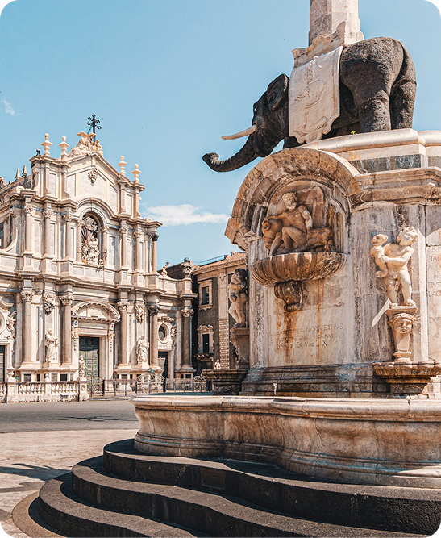

Il cuore della città
Piazza Duomo è il cuore pulsante della città di Catania, luogo di incontro tra cittadini e turisti. È il punto da cui si sviluppa gran parte del centro storico e rappresenta uno spazio simbolico per la vita sociale, culturale e religiosa della città.
Al centro della piazza domina la Cattedrale di Sant'Agata, dedicata alla patrona di Catania, Sant’Agata. Costruita nel XI secolo su resti di edifici precedenti, è stata ricostruita più volte a causa di terremoti ed eruzioni dell’Etna. La sua architettura unisce stili normanno, barocco e neoclassico.
Uno dei simboli più conosciuti di Piazza Duomo è la Fontana dell'Elefante, realizzata in granito e risalente al XVIII secolo. L’elefante, chiamato “u Liotru” dai catanesi, è il simbolo della città e rappresenta forza e protezione.
Oggi la piazza non è solo un luogo storico, ma anche uno spazio vivo, usato per eventi religiosi, feste cittadine e momenti di incontro quotidiano. La combinazione di arte, architettura e vita sociale la rende una delle piazze più importanti della Sicilia.